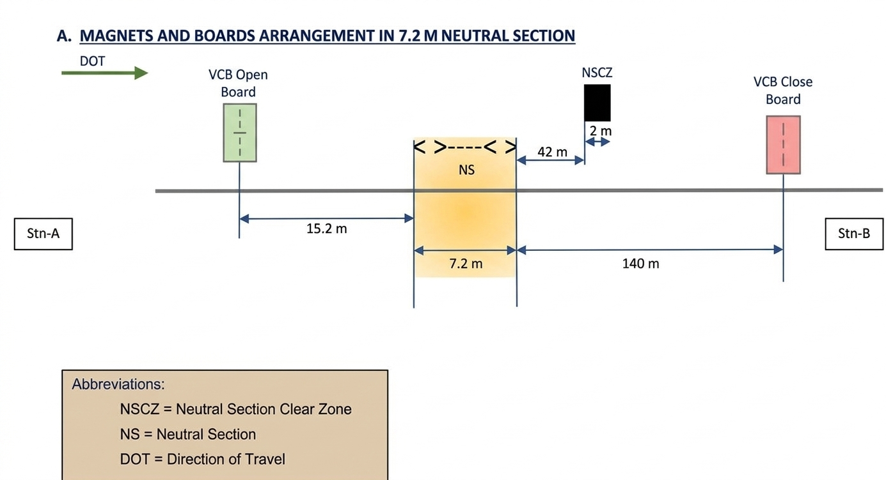
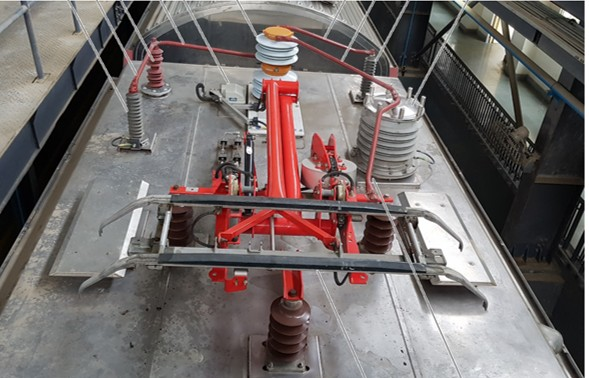
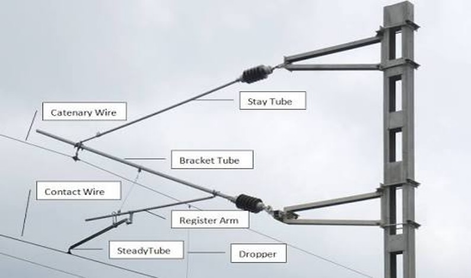

Noida Metro Safety Rules, Procedures, SOP and SWO/DWO pertaining to Main Line and Depot Operations
Scope: This procedure applies for issuing, revision updating and deletion of Joint Procedure Orders, Safety Circular, SOP and SWO/DWO on main line as well as in Depot where either due to nature of work or otherwise two or more than two departments are involved.
The Standing Safety Executive Committee (SSEC) shall consist of HODs of various departments for final reviewing of the above said documents.
Coordinator: HOD of the concerned department initiating a document shall act as coordinator.
Review: SSEC shall be responsible for reviewing the joint procedure orders put up by the concerned HODs.
Nomination: HODs shall nominate one Dy. HOD from their wing for preparation/modifications in JPO.
| Step | Action Required |
|---|---|
| Step 1 | Nominated Dy. HOD of the department initiating a document shall prepare draft of the document to be issued/revised/withdrawn and put up for signature of concerned Dy. HODs. |
| Step 2 | Nominated Dy. HOD of the department initiating the document shall put up draft document for perusal/signature of SSEC after the document has been signed by concerned Dy. HODs. |
| Step 3 | Nominated Dy. HOD of the department initiating the document shall put up the document for perusal/approval of authorized officer after the document has been reviewed by SSEC. |
| Step 4 | Nominated Dy. HOD of the department initiating the document shall forward the document to nominated Dy. HOD of operations department for issue after the document has been approved by the authorized officer. |
| Step 5 | Nominated Dy. HOD/Operation shall issue JPO/SC its revision/addendum/correction slip after the document has been approved by the authorized officer. |
The following officers/offices shall maintain an up-to-date copy of all these documents and shall ensure their employees are fully conversant with their contents.
Temporary instruction is issued to meet an urgent need and is included in the next issue/revision. Temporary Instruction shall be prepared by concerned Dy. HOD. If more than one department is involved in work, draft Temporary Instruction shall be reviewed and signed by all concerned Dy. HODs.
DURING NON-REVENUE HOURS
Engineer's Possession is an Authority given to an Agency or Department within an Organization to have access to the portion of the Track or Tracks or a Line Segment for a specified period of time for the purpose of Inspection, Repair, Maintenance, Construction, Re-habilitation and Testing of Equipments etc. EP shall normally be granted during Non-revenue Hours.
If more than one Maintenance Agencies are required to work within the limits of the same Engineer's Possession, the EPIC can permit other NMRC Official to work as Sub-EPIC, if so notified in advance in the Weekly General Order. Only NMRC Staff, not below the Rank of Sr. Maintainer having Competency, shall be the Sub-EPIC. Sub-EPIC cannot authorize further Sub-EPIC.
Not below the rank of Sr. Maintainer (OHE or PSI), who has been issued Competency by appropriate Authority to avail Power Block & give Shadow Power Blocks to others.
Integrated Blocks (IB) are such Blocks, where the Maintenance Staff of different Disciplines, viz. Signalling, Telecommunication, Civil, Traction, and Track etc can work simultaneously... without affecting the Integrity of Track and other Commissioned and Working Assets. In IB, Movement of any Self-propelled (OHE / Non-OHE) or Non- self-propelled Vehicle (including Lorry, Trolley. etc.) is strictly prohibited.
Power Block means Switching off 25KV traction Power Supply in a particular Section. All switching ON or switching OFF operations of traction power required for maintenance work or engineers possession or for any other purpose shall be approved by TPC. The Line /OHE Section, which is under the Power Block shall remain under the Control of only one Traction Staff who has taken the Power Block from TPC. The same Traction staff is only authorized to cancel the Power Block, as per laid down Procedures.
Shadow Power Block is further extension of the Power Block, granted by the Traction Staff to other Authorized Person seeking permit to work in the part/area covered by the 'Power Block', under the provisions of placing of Discharge Rods on OHE as per extant Procedures. In no case, a Shadow Power Block can be granted to the Contractor, directly by the Traction Wing.
Granting of EP/IB/Power Block/Shadow Power Block shall be in the form of a 'Weekly General Order' to be issued by OCM on every Friday, for the ensuing Week commencing from Saturday Night till Friday Night.
Requirements for Power Block, Shadow Power Block & Permit to Work during Non-revenue Hours shall be submitted by the all concerned, until 1500 Hrs. of every Thursday to the Chief Controller (CHC) / OCC.
No Variation from the Weekly General Order, issued by OCM, shall ordinarily be allowed. Only in cases of extreme emergency, the Unscheduled Requests shall be considered by the OCM. Care shall, however, be taken to ensure that already granted EPs are not cancelled to accommodate such requests.
For any kind of work where exists a possibility that Men, Material, Equipment or Tools & Plants may infringe '2' m radius from OHE, the same must be undertaken under the Provision of 'Shadow Power Block'.
Power Block Locations Allowed:
OHE and other electrical equipments shall be treated as live unless specified dead.
No Maintenance Staff shall enter on to the Track of any Running Line without the Permission of the Traffic Controller and Permit To Work.
EPIC shall protect the area under Engineers Possession/Integrated Block from access by trains in one of the following ways:
Traffic Controller/Station Controller/Depot Controller shall also protect the area by available means as under:
If more than one Maintenance Agency is working within the same EP, the EPIC shall be responsible for coordination of the Work of all Units. During the Work, Granting & Cancellation of Shadow Power Block shall be with the EPIC & Sub-EPICs. However, they will be assisted by their respective Controllers, within the said EP. For the purpose of Permission at Site, the EPIC will be overall responsible & give this Permission to the Sub-EPICs (i.e. other Maintenance Agencies) for the work.
Only for the movement of OHE Vehicles, the TPC of the concerned Line may be EPIC / Sub-EPIC. 'Permit to Work' shall be granted to the TPC of the respective Line at the OCC by the TC of the concerned Line... only for movement of vehicle in mainline.
Movement of other than Self-propelled Vehicles which don't have efficient Brakes & may go out of control shall be accompanied by sufficient number of persons, so that an eventuality is handled properly. Even the Section of such a Block, shall be a longer one i.e. between at least two Stations.
| Stage | Detailed Procedure & Responsibilities |
|---|---|
| GRANTING POWER BLOCK | On the basis of 'Weekly General Order', the TPC shall grant the Power Block to the authorized Traction Staff. The Power Block shall be granted by TPC only after obtaining Confirmation from the Traffic Controller, duly obtaining his Signature in the Register meant for the purpose. Traction Power Controller shall thereafter confirm the same, under Acknowledgement, to TC. |
| MANDATORY COORDINATION | The Traction Power Controller shall maintain a Register & shall obtain the Signature from the Traffic Controller, as Acknowledgement before/after granting and before/after cancelling. Any alteration in the Power Block or any contemplated Train Movement, prior to the grant of Power Block, shall be advised by Traffic Controller to the Traction Power Controller, by duly signing in the Traction Power Controller Register. |
| CANCELLATION OF POWER BLOCK | Power Block is to be cancelled by Traction Staff after ensuring that all Shadow Power Blocks, authorized by him are cancelled. Traction Staff shall inform the Traction Power Controller by a Message duly exchanging Private Numbers that all Shadow Power Blocks have been cancelled, all Men, Materials, Equipments, Tools & Plants and temporary Earths have been removed & all the working parties have been informed that OHE is now going to be energized. |
Given for Activities such as Roof Cleaning, Track cleaning, PD Work or any other station operational work in Platform Area within the Working Zone of 2 m from OHE. SC shall provide the Discharge Rods.
Not below the rank of Sr. Maintainer having valid competency to work as EPIC. PSI Staff shall provide the Discharge Rods.
Discharge Rods, in this case, shall be provided by the OHE Team or EPIC/Sub-EPIC as per prescribed Procedure in vogue.
Nominated EPIC/Sub-EPIC in the weekly general order to get the 'Shadow Power Block' shall contact the Traction Staff, nominated for handling the 'Power Block'. On getting confirmation... the Traction staff shall put the Discharge Rods on OHE and intimate the same, under the exchange of Private Numbers / in writing, to the EPIC/Sub-EPIC. SC, before granting PTW, shall reconfirm from Traction Staff that OHE is de-energized and Discharge Rods are put.
Traction Staff informs SC under exchange of Private Numbers that OHE has been made de-energized, permitting EPIC/Sub-EPIC to provide Discharge Rods. After providing Discharge Rods, SC confirms to Traction Staff, who reconfirms with TPC and grants 'Shadow Power Block' to SC mentioning Time Duration. Only after this, SC grants 'Permit to Work' to EPIC/Sub-EPIC.
SC acts as EPIC. An Experienced Supervisor from Cleaning Contractor or NMRC must supervise. In the vicinity of OHE, only 4-leg Ladder in good condition shall be used, well secured. Wheels must be disabled. High-rise Telescopic Mops shall not be used in the vicinity of OHE.
If required, the request to issue 'Point Machine Manual Operation Key (EKT- Key) along with Crank Handle' shall be given in writing by EPIC in the PTW (Annexure - 'A'). SC shall make necessary entries in the Possession Register and endorse the PTW before issuing.
Any abnormality requiring extension is to be immediately informed by EPIC to the OCC & Station Controller in advance. EPIC shall submit PTW cancellation and seek fresh PTW in consultation with OCC. If adjacent track is unaffected, train services shall operate with caution order.
No OHE Power Block / Shadow Power Block shall be required for Maintenance Work on Signals, Points, Track Circuits, PIDS, PAS, Clocks etc. if they do not come within a radius of '2' m from OHE or are well protected by protective Earthed Mesh (Screen). However, dismantling of complete Signal Unit from the Signal Post, if protected by Earthed Mesh (Screen), shall require Power / Shadow Block.
INDEMNITY BOND: Non-Metro Employees entering Right of Way must be authorized, covered by a valid PTW issued to NMRC staff, and sign an Indemnity Bond (Annexure 'G') or be covered under general contract provisions.
The EPIC applying for the PTW to work in 'OHE Charged' condition shall give his / her request in writing to the SC of the Station where he / she intends to work, specifically mentioning that nature of work does not require the OHE to be in 'Discharged' Condition as the work, men, tools and material shall not infringe minimum safe OHE radius of 2 meters, he / she is having the competency, and aware of 25 kV do's and don'ts. SC verifies from WGO and grants PTW with OCC permission.
Following Safety Precautions shall always be observed at Platform Level:
STABLING & INDUCTION OF TRAINS
| Authority | Action Required |
|---|---|
| ROLLING STOCK SUPERVISOR (PPIO) | After ensuring Maintenance & Housekeeping Staff have left and Doors are closed, the RS Supervisor in the PPIO shall endorse the Fitness of the Trains and the 'Consist' of the Train (Configuration of 4-Car) in the Log Books and submit them to the Depot Controller. |
| PPIO (LIST SUBMISSION) | The PPIO shall submit a signed list of all the Trains that have been given 'Fitness' along with their Stabling Locations to the Depot Controller, at least 60 minutes prior to the departure of Pilot Train. |
| DEPOT CONTROLLER (DCC) | The Depot Controller shall confirm the 'Validity' of the 'Fitness' of the Train from the Log Book and hand over the Log Book along with the Mascon Key, Square Key and Tetra Set to the nominated Train Operator. |
OCC, before the movement of Pilot Train, must ensure that all the EPICS / Sub-EPICS have submitted PTW Cancellation Forms duly certifying that:
Each Station Controller shall ensure that:
The Speed of the Pilot Train shall be restricted to a maximum of 40 Kmph. Though in Revenue Service, the Train will continue to act as a Pilot Train as mentioned in the Time Table with a Maximum Restricted Speed of 40 Kmph.
The Train shall move in ATP Mode under Cab Signalling. TO shall follow all the Speed Restrictions enforced in the Section (s) and follow Cab / Fixed Signals. In case Cab Signalling is not available, the Train shall be driven in the Degraded Mode, as per Procedure in vogue.
If any abnormality is noticed during the Pilot Train Run by the TO, which is not likely to affect the Safe Running of Trains, the same shall be reported to OCC and TO will drive the Train cautiously.
Degraded Mode of Train Operation... includes train movement in RM, ROS & Cut-Out Mode. The train is moved by TO on his line of sight exercising utmost vigilance so as to stop short of any obstruction ensuring that train speed does not exceed 25 kmph or less if applicable.
A route is considered as set if its valid indication on the VIDEO WALL/CATS/LATS/VDU is displaying the track in green colour.
A point is indicated as set & locked if and only if a valid indication on the VIDEO WALL/CATS/LATS/VDU displays the corresponding route as set and the point under reference set & locked (i.e. a solid grey colour box on point) and not flashing.
Train shall be moved in degraded mode under the following circumstances after authorization from TC is obtained on exchange of private number:
Rule 23 (MRGR 2013): If a train operator observes that a fixed signal is not displaying any aspect, he shall stop his train and seek instructions from the traffic controller by radio.
Movement in degraded mode shall be authorized from one point to other provided the route is clear... and all points enroute are set & locked.
Train operator shall never pass a signal at danger without authorization from TC. TO shall never operate train in degraded mode without authorization from TC.
Any instruction to the TO for authorizing him to move in degraded mode shall be given on Radio on exchange of private number between TO and TC. If communication fails, SC takes control and exchanges private numbers.
| Communicating Party | Sample Statement |
|---|---|
| Train Operator | T. No. 0110 at SECTOR-71 STATION Up PF, going towards SECTOR-50 STATION on Up line, Train is not getting target speed, track on my line of sight is clear, please provide authorization... |
| Traffic Controller | T. No.0110, your route is set & is clear up to SECTOR-50 STATION Up PF and you are authorized to move on Up line in ROS mode up to SECTOR-50 STATION Up PF & to pass Signal S110A at green under Private No. "Four-three forty three" (43). |
| Train Operator | Line of sight is clear, OCC's private no. "four-three forty three" (43) is noted for movement... Private No. of T. No. 0110 is "one-five fifteen" (15). |
| Condition | Action of TC/SC |
|---|---|
| (a) At platform NSP (b) Not in front of signal (c) In front of Green (d) In front of Violet |
Verify CATS indications. Ensure route set, points detected set & locked. Ensure track ahead is clear. Authorize TO on exchange of private number to move in degraded mode (ROS/RM) up to destination platform/signal/siding. |
| (e) Red Signal, NO points, NO Proceed Code | Same checks as above. Before authorizing a movement on 'Red/Blank' aspect, TC shall ensure that no conflicting movement has been allowed on the route & any new movement shall not be allowed till the train has cleared the section completely. |
| (f) Red Signal, NO points, Proceed Code IS available | Authorize movement in ROS/RM mode. At the next platform, TC shall instruct TO to select the ATP/ coded manual Mode to resume normal operation. |
| Condition | Action of TC/SC |
|---|---|
| (g) Blank signal, points detected set & locked, proceed code available | Verify route/points set & locked. Authorize TO to pass signal at blank and proceed according to cab signal. Inform following trains about blank signal to continue in ATP. |
| (h) Red/Blank signal, points detected set & locked, NO proceed code | Ascertain reason (axle counter failure, opposite signal out of service, route indicator LED failure). TC shall unblock & then block the points enroute through CATS controls. Verify execution. SC confirms status. Authorize TO under private numbers. |
| (i) Red signal, points detected set & locked, Proceed Code IS available | Authorize train movement in cut out mode. At the next platform, instruct TO to select ATP / coded manual Mode to resume normal operation. |
In case of CBTC Comm Failure, Location of Train will not be available; only lost train indication on its last location with Rake ID will be available on ATS MMI/VDU/Video Wall. There is possibility of more than one Train present in the same track section.
| • Point Operating Rod / Crank handle | • Key extracted from EKT |
| • Clamp & Pad lock | • Red / Green Flags |
| • Torch & Tetra | • Private Number Book |
| • PSD / MSD Keys | • PPEs |
STABLING, SECURING, OPERATION & RESCUE
The Diesel / Battery powered locomotive shall be used to carry the work train (Flat wagon, CTMC, OMV and Rail Grinding power car) for planned maintenance. In emergencies, locomotives are used to rescue defective trains, failed Tower wagons, or failed OHE maintenance vehicles during revenue/non-revenue hours.
| Operating Condition / Location | Max Speed |
|---|---|
| Main Line (General Operation) | 25 kmph |
| Yard (with prior permission of DCC & PPIO) | 15 kmph |
| More than one vehicle in one interlocking zone | 10 kmph |
| On Turnouts | 10 kmph |
Authority to Proceed shall be obtained from OCC(TC)/SC by the incharge / EPIC / Vehicle operator as per extant procedure for passing any signal at danger i.e. displaying red/violet/blank aspect.
The vehicle shall be in possession of the Engineer's Possession In-charge, who must have a working TETRA Radio set. The EPIC shall submit the requisition for traffic block and permit to work with the following details to CC and TPC:
Supervisor in charge must ensure:
DURING TRAFFIC HOURS
List of Equipments available in Emergency Rail Fracture Bucket is given in the following Table:
| S. No. | Item Description | Qty |
|---|---|---|
| 1. | Double Ended Spanner | 01 |
| 2. | Ring Spanner (16-17) | 01 |
| 3. | Crow Bars | 02 |
| 4. | Clamps | 02 |
| 5. | Joggle Fish Plates for weld fracture | 02 |
| 6. | One meter long fish plate for rail fracture | 01 |
| 7. | Special Clamps (for Fracture in Ballastless Track) | 02 |
| S. No. | Item Description | Qty |
|---|---|---|
| 8. | Red Flags | 02 |
| 9. | Green Flags | 01 |
| 10. | Rail Pieces (Size 12 mm to 30 mm) | 05 |
| 11. | Private No. Book | 01 |
| 14. | Walkiey Talkie Set | 01 |
| 15. | Rail Jumper (2 m Long) | 02 |
| 16. | Insulated Hand Gloves | 02 Sets |
The Team shall proceed to the Station, nearest to Rail Fracture / Weld Failure Location either by Emergency Vehicle, available in P. Way/Office or by any other quickest Mode of Transport.
AM / Manager / SSE P. Way shall also proceed to site and keep in touch with OCC & Supervisor / P. Way/Office for details and chalked out Action Plan.
During journey to the Station, the Supervisor shall inform OCC about the Station from which the Track Access is required by him.
This must be done under the exchange of Private Numbers. OCC shall coordinate the same so that no delay is caused to attend the failure on this account.
On reaching the Site of Fracture / Failure Location, the Supervisor / P. Way/Office shall carry out Emergency Repairs as per Procedure indicated below:
As soon as the Emergency Work is completed, the Supervisor shall communicate to OCC that the Track is fit for Traffic at speed of:
This is done by exchanging Private Numbers and confirming the affected OHE Mast Nos. Traffic remains suspended till the receipt of Track Fit Message in the OCC.
After resuming Traffic, TPC shall inform HOD/Civil, DY.HOD/P.Way, AM / Manager P. Way & SSE / P. Way. Chief Controller / Traffic Controller shall inform DY.HOD/O, DY.HOD/TO & HOD/O.
After Temporary Repairs of the Rail Fracture / Weld Failure, the SSE / P. Way shall arrange for requisite Traffic Block & make necessary arrangements to carry out the Permanent Repairs, preferably in the same Night.
AND ISSUE OF CAUTION ORDERS ON LINE
All Requests of the TSRs shall be submitted by the Authorized Personnel of Rank, not less than Junior Engineer as per prescribed format.
Traffic Controller / Depot Controller shall verify the Track Segment Number/s corresponding to the OHE Mast Nos. from FMC & TPC. (Track Segments means blocks of smaller length which are parts of any track section to facilitate imposition of TSR on a limited area).
Note: VDU is available at every station having Points and Crossings.
The Traffic Controller shall advise the Depot Controller & Station Controllers of the Terminal Stations of all TSRs to be enforced during next day on the entire Mainline on daily basis and shall maintain a Record. Traffic Controller shall also advise the TSRs to the Crew Controller. Crew Controller and Depot Controller shall write on the notice boards and sign on register as well.
Since Trains can run in non-ATP Mode at Speeds lower than 25 Kmph, the System as such cannot enforce the TSRs of Values less than 25 Kmph in non-ATP Mode.
TSRs of Values less than 25 Kmph shall, therefore, be advised to the Train Operator in writing in the form of caution order by the station controller.
The application of TSR from an ATS screen workstation may not have an immediate effect upon the speed restriction for the segment in question if there is a moving CBTC train in the segment. TSR should not be applied on a track section until confirmation that there are no moving trains.
| TSR Imposed by TC/SC/DC | Target Speed on MMI / DMI | Emergency Braking Speed |
|---|---|---|
| 80 Kmph | 72.0 Kmph | 74.5 Kmph |
| 70 Kmph | 62.0 Kmph | 64.5 Kmph |
| 60 Kmph | 52.0 Kmph | 54.5 Kmph |
| 50 Kmph | 42.0 Kmph | 44.5 Kmph |
| 40 Kmph | 32.0 Kmph | 34.5 Kmph |
| 30 Kmph | 22.0 Kmph | 24.5 Kmph |
| 25 Kmph | 17.0 Kmph | 19.5 Kmph |
| 15 Kmph | 07.0 Kmph | 09.5 Kmph |
Note (i): Speed uncertainty (dynamic) = ±1.0 Kmph.
Note (ii): The above speed restrictions will be applicable when brakes on all bogies of trains are working normal.
SOFT RESET OPERATION PROTOCOLS
If track section is flashing due to power failure / cold start of axle counter section / miscount or any other error, soft reset operation is required.
Axle Counter Soft Reset command will be given by Traffic Controller/Station Controller (having the control of interlocking). TC & SC shall take the following steps:
After giving soft reset command, a train running through (sweep in RM) the fault section is required in order to clear occupancy of the section.
Any vehicle with wheel diameter less than 300 mm will not be detected by Axle Counter.
In case soft reset of Axle counter section is not possible due to any technical reason, TC/SC shall inform signalling maintenance staff to attend the fault/failure.
DURING FAILURE OF INTERLOCKING SYSTEM
If failure is localized, there is a mismatch between normal running areas and the affected portion (25 Kmph limit). Appropriate Train Regulation is required to avoid Congestion. May require Turn Back / Short Loop Operation decided by OCC in consultation with OCM.
SC in consultation with OCC shall take the following actions to reduce flow:
Adequate arrangements shall be made for Refund of Fare / Revalidation of Tickets in case of Train Cancellations / Short Loop Operation / Train Delays in accordance with the Business Rule in vogue.
Predetermined position of Points is clamped & padlocked, while one Manual Control Point is manned, clamped and pad locked for each Movement by the SC.
| SC Actions & Signals | Movement Sequencing |
|---|---|
|
STRICT RULE: Only one Train Movement at a time (Non-interlocked yard).
|
If Manual Point Operation cannot be authorized by ATS System and Point Key cannot be released from the EKT, Duplicate Keys from the sealed 'Emergency Key Hive for MPO' are used.
'R' = Reverse position of point
'N' = Normal Position of point
'R/N' = Reverse/Normal = Manual Control Point (MCP)
NOTE:-
(1) In case of situation where layout of crossovers at terminal station is different from those shown in this Annexure, TC/OCC shall be responsible to inform SC about desired position of points required for Manual Terminal Operation on exchange of private number.
(2) The diagrams depicted above are only for understanding, final decision on manual control point and reverse positioned point shall be taken by TC/SC as per situations.
DURING TRAIN OPERATION ON MAIN LINE
Configuration of train-IDs on Noida-Greater noida Line is a 4-Digit System structured as follows:
| Line | Number of Digits | Configuration Breakdown |
|---|---|---|
| DN | XX XX (4 Digits) |
First 2 Digits: Destination. Last 2 Digits: Service ID. |
| UP | XX XX (4 Digits) |
First 2 Digits: Destination. Last 2 Digits: Service ID. |
Sector-71 to Depot Station (Terminal-to-Terminal).
Change / Swapping of Train IDs shall be done only after the approval of OCM/DGM(O):
If, due to delay in running, the Trains get dissociated, the IDs of all Trains need to be replaced.
If any Train from the Depot is late for Induction on Main Line due to any Problem/ Failure, the Train ID of this Train needs to be swapped with the IDs of Train/Trains, which was/were supposed to follow this Train.
If Trains are running late and due to any Technical Problem of the System, Train IDs get lost, then same Train IDs need to be assigned again, at defined points of Berthing. If not possible to manage Operations in 'Schedule Mode', Line Running Mode may be changed to 'Constant Headway Mode' with DID.
When a Train Set is withdrawn by RSC or FMC:
When a Train Set is withdrawn by RSC or FMC:
Changes train's schedule (in automatic mode). Train must be in operator's territory.
Exchanges TID and DID of two trains. Both must be in assigned territory.
If needed, the operator can remove a train and its Permanent Vehicle ID (PVID) and/or TID from the system.
Applicable for 4 Car Trains in NMRC
| Idx | Equipment Details & Rules |
|---|---|
| 1.1 | The Neutral Section provided between Sector-145 and Sector-146 is of 7.2 mtrs in length (SNS type), equipped with Phase Break. |
| 1.2 | The middle point of the Neutral Section is earthed and as such, these Neutral Sections cannot be bypassed. |
| 1.3 | Only the Supply can be extended by closing the bridging BM. |
| Idx | Marker / Zone | Specification Details |
|---|---|---|
| 2.1 | 500 m Board | Advanced warning marker board installed before the neutral section. |
| 2.2 | 250 m Board | Intermediate warning marker board installed before the neutral section. |
| 2.3 | VCB Open Board | Installed exactly at a Location 43.9 m before Neutral Section. |
| 2.4 | VCB Close Board | Installed exactly at a Location 140 m after Neutral Section. |
| 2.5 | NSCZ (Clear Zone) | Starts at 42 m from the end of the Neutral Section and extends for 2 m. Ensures Front Cab/Pantograph is under Live OHE. |
| Idx | Direction Mode | Visual Characteristics |
|---|---|---|
| 3.1 | Normal Direction | Marker Boards (500 m, 250 m, VCB Open, NSCZ, and VCB Close) are Black Printed with White Background. NSCZ is a 'White & Black Chequered' retro-reflective board. |
| 3.2 | Wrong Direction | Marker Boards (500 m, 250 m, VCB Open, NSCZ, and VCB Close) are Black Printed with Yellow Background. NSCZ is a 'Yellow & Black Chequered' retro-reflective board. |
Standard operating procedures for passing through the neutral section without stopping.
| Rule 1 | AUTOMATIC OPERATION: NMRC trains are equipped with devices which automatically open up the VCB(s) at VCB open marker board and automatically close the VCB(s) at VCB close marker board. |
| Rule 2 | MAINTAIN SPEED: TO shall maintain sufficient speed before the neutral section so that train shall not stop in between the neutral section. |
| Rule 3 | SPEED COMPLIANCE: In any case, TO shall not violate the target speed or any other speed restriction and shall stop of any obstruction. |
| Rule 4 | MONITORING & REPORTING: TO shall observe the opening and closing of VCB(s). In case, VCB(s) is not opened or not closed automatically, TO will report the same to OCC and take action as per guidelines of TC. |
| Case A | If VCBs are closed, proceed normally. |
| Case B | If VCBs are open, close VCB & proceed normally. |
| Step 1 | Lower down the front unit pantograph. Move the train with rear unit pantograph. |
| Step 2 | Keep a look out for NSCZ and stop the train in such a manner that the Front Cab is in NSCZ. If due to any reason VCB opens and the Train stops before NSCZ, check the line voltage status, if available, close the VCB and move up to NSCZ. |
| Step 3 | At NSCZ lower down the rear unit pantograph and raise the leading unit pantograph. |
| Step 4 | Move the train with front unit pantograph up to next station NSP and open doors for platform duty as per extant procedure, if due to any reason VCB opens and train stops before the NSP, close VCB and move up to NSP. |
| Step 5 | At Station NSP select both unit pantographs and close the VCB. |
| Step 1 | Lower down the rear unit pantograph and move the train with front unit pantograph up to next station NSP and open doors for platform duty as per extant procedure, if due to any reason VCB opens and train stops before the NSP, close VCB and move up to NSP. |
| Step 2 | At Station NSP select both unit pantograph and close the VCB. |
| Check | Check whether both VCBs are closed. |
| Case A | If the VCBs are closed, proceed normally. |
| Case B | If one VCB is open, close it as per procedure. If closed, proceed normally. If VCB does not close, troubleshoot as per extant procedure. |
Utmost Care shall be taken by system and all concerned that no Train enters a Neutral Section with VCB in Closed Condition.
Note: TO shall inform OCC after following the above mentioned Procedure for Train Movement. In case of any other Problem, TO shall communicate with OCC and ask for further Instructions.

Applicable for Main Line Operations in NMRC
Initial verification and actions to be taken by the Train Operator.
| (a) | If Train is standstill at platform NSP: Train Operator of that Train shall visually verify the condition of all pantographs and OHE. |
| (b) | If train is moving: Train Operator of that train shall inform TC and continue moving up to next station platform NSP. After stopping the train at Station NSP, TO shall visually verify the condition of all pantographs and OHE. |
| (c) | Heavy Vibration/OHE Infringement: If train is moving and Train Operator feels/notices heavy vibration or OHE damage or sag in OHE or any infringement in OHE, TO shall stop the train immediately, inform TC and come out at walk way of the parapet/tunnel or at grade level at the side of ballasted track, watch the OHE and pantograph carefully and report TC with details of damage (if any). |
Traffic Controller shall stop following trains in the same line to avoid entry in that section till the OHE is verified by the adjacent line train and regulate other trains as per requirement.
| (a) | Adjacent Line Checking: Traffic Controller shall instruct TO of the adjacent line (wherever applicable) to observe the OHE of other line by driving at not more than 25 kmph for two stations at least from the suspected location so as to enable TO to look for any abnormality in OHE. The TO shall report to OCC if he has seen any abnormality in OHE with location and nature of defect. |
| (b) | Same Line Checking (e.g., Tunnel): If it is not possible to get the OHE checked by adjacent line train, e.g. in tunnel, the following two trains in the same line should be instructed to move at a speed not exceeding 10 kmph with front Panto lowered in the said section to observe any abnormality so that be able to stop the train short of any abnormality, if there is any and report the same to OCC. |
| (a) | No Apparent Problem: If no apparent problem is observed by Train Operator in pantograph/s of the train after flashing, the TO shall report TC the mast number in front of him and the train shall be moved further. RSC shall arrange the train to be checked by RS staff at the earliest. |
| (b) | Visible Problem: If there is visible problem reported by The Train Operator in pantograph/s, then the train be moved as per steps mentioned in Case II. |
| (v) | Restore: If no apparent problem in OHE is observed by checking trains, resume normal services. If any problem is observed, train shall be moved as advised by RSC and TPC (Panto management or reduced speed). |
| (vi) | Rectify: If the problem is observed in OHE, TPC shall arrange for the rectification by OHE staff. Only after fitness certificate by authorized OHE staff that section of OHE is fit for movement of train, any train movement shall be undertaken. |
Actions required when physical damage to the pantograph is confirmed.
| (a) | At Platform: The damaged pantograph/s shall be lowered by Train Operator and shall be secured by RS/OHE staff. The further train movement will be done only as advised by RS/OHE staff. |
| (b) | Entanglement/Stalled: If the damaged pantograph cannot be lowered (panto entanglement) then that train shall not be moved till authorized by RS staff for movement. TO shall operate the isolating cock of damaged pantograph. Passenger rescue may be required (MRGR 50). |
| (ii) | OHE Checking: Similar to Case I, the OHE must be checked by adjacent line train (max 25 kmph) or by first two following trains on same line (max 10 kmph with front panto down). If no problem is found, following trains move at max 40kmph till fitness certificate is given. |
| (iv) | Previous Trains: In case of damage in pantograph/s is confirmed, pantographs of previous two trains to have passed through the affected section shall also be checked by RS staff. |
To be undertaken at the incident site only when train is discharged with passenger under provisions of power block.
| Rule 1 | Mobilization: The RSC shall inform PPIO, inspection in charge and officers' in charge of the concerned depot immediately about the incident. TPC shall instruct OHE Team to reach site with break down recovery material. |
| Rule 2 | Documentation: The senior most supervisor of the RS/OHE department on reaching the incident site shall first make a very careful note of all the relevant details... take photographs... arrange to make a sketch. |
| Rule 3 | Command: If both RS and OHE maintenance team reach the site, the supervisor of OHE team shall be the EPIC and he shall control the rescue work. |
| Rule 4 | Power Block: The securing of pantograph/restoration work shall be started only after getting the permission from the EPIC, about the power block. |
| Rule 5 | Access: The EPIC after confirming that OHE is dead and earthed shall allow OHE and RS staff to climb on the roof of the train to secure the damaged pantograph. |
| Rule 9 | Securing: RS/OHE maintenance team will secure the broken pantograph with manila/wire rope from the base frame... in such a manner that it does not come in contact with OHE during the run. |
| Rule 13 | Movement: In case of damage to only one pantograph of the train, the movement of train may be permitted with other healthy pantograph with restricted speed and train may be stabled to the nearest siding or if possible in the depot. |
| Rule 14 | Foot Plating: After completion of restoration work and resumption of train services foot plating of complete section shall be done by OHE staff for ensuring healthiness of the OHE. |
| Rule 17 | Testing: After replacement of defective pantograph, the train will be stabled on IBL and after taking power block of that IBL, the contact pressure of replaced pantograph with OHE will be measured. The train will be tested on the test track. |
Precautions while handling damaged pantograph on main line.
| (i) | Permit: Before moving to the incident site, staff must take the Permit for "Access to Track" as per extant procedure. |
| (ii) | Visibility: While moving on the track staff must wear visibility jackets. |
| (iii) | Power Block: Before climbing on the train roof, it must be ensured that power block has been enforced and discharge rods have been placed. |
| (iv) | Ladder: The securing of the ladder to be used for climbing on the train roof must be ensured. |
| (v) | Support: While climbing on the roof... maintenance staff must be very careful as there may not be any support available to the safety belts. |
| (vi) | Infringement: Any tools, ladder must not infringe with other line and must be kept at a safe distance of 2 mtr from the other charged line. |


Applicable for Train Movements in NMRC
Initial coordination and actions required for a train approaching the depot.
| Rule 1 | PPIO Planning: The PPIO shall provide the plan to Depot Controller (DC) in advance for stabling of particular train set on a particular track/berth. |
| Rule 2 | TC/SC Notification: Traffic Controller (TC)/Station Controller (SC) shall inform Depot Controller (DC) about train no. & train set no. whenever a train is to be sent to depot from main line. |
| Rule 3 | Main Line Exit: TC/SC shall inform Train Operator (TO) that route for the train is being set. On getting proceed indication at main line exit signal, TO shall move the train up to depot entry signal. |
| Rule 4 | Emergency Change: If traffic plan changes due to any emergency, TC/SC shall give the message to the Train Operator under exchange of private no. |
Territory/jurisdiction of OCC is up to depot entry signal whereas that of DCC starts from depot entry signal. In case of any fault appears in train at transfer track after departure of train from main line exit signal till the departure of the train from depot entry signal, OCC shall be the guiding authority.
Authorization and movement within the depot.
| Rule 6 | Depot Mode & Request: TO shall select depot group mode on train radio/tetra and stop the train at depot entry signal. He shall then inform the train no., train set no., driving cab no., depot entry signal no. & aspect to DC and seek authorization. |
| Rule 7 | Route Setting: DC shall set route for the train from depot entry signal up to stabling location as far as possible. If not feasible, he may set partial route... fresh authorization shall be required before moving the train further. |
| Rule 8 & 9 | Exchange Private No: DC, while giving authorization... shall offer his private number. TO shall acknowledge the message by repeating... and shall then provide his private number to DC. TO must not exchange the private number with DC if the signal is at ON/blank aspect unless explicitly authorized. |
| Rule 10 & 11 | Depot Movement: After exchanging private no... TO shall select depot entry mode (ROS/Depot RM) and proceed. TO shall proceed into depot cautiously as directed under the control of depot signals with a speed not exceeding 25kmph. |
Procedures for dispatching a train from the depot to revenue service.
| Rule 1 & 2 | Preparation & Planning: Rolling Stock Staff shall endorse fitness. PPIO and DC shall plan operational ID No. to avoid back-to-back dispatches from similar locations. |
| Rule 4 & 5 | TO Checks & Ready: TO performs pre-departure checks. Informs DCC that train is ready along with train details and seeks authorization. |
| Rule 6 & 7 | Route & Authorization: DC sets route from stabling location to depot exit/main line entry signal. DC authorizes TO offering a private number. |
| Rule 8 & 9 | Exchange & Proceed: TO acknowledges and provides his private number. TO selects ROS/Depot RM mode and proceeds cautiously (max 25kmph) to the authorized signal. |
| Rule 12 & 13 | Main Line Entry: TO stops at depot exit signal, changes radio mode to main line, informs TC/SC. TC/SC sets route and authorizes entry on exchange of private number. |
General rules and departmental responsibilities within the depot boundaries.
| Rule 1 | Train Operator should be vigilant and cautious during train movement in depot and s/he should be able to 'STOP' the train short of any obstruction or 'ELECTRIC ENGINE STOP BOARD'. |
| Civil | Ensure availability of boarding/de-boarding platforms, retro reflective tapes on buffers, point no. plates for non-interlocked points, and fouling mark board. |
| Signaling | Ensure point no. plates for interlocked points, signal no. plates for shunt signals, arrow marks, ATC begins/ends boards, and stopping boards. |
| RS / Elec | Ensure indication boards, speed boards, no work activity before stabling (RS). Ensure lighting and Electric engine stop boards (Elec). |
GUIDELINES FOR PLATFORMS AND SIDINGS
| Rule 1 | S&T Department: Ensure provision of NSP boards at platforms and SRMB in sidings/turn back facilities for '4' car trains. |
| Rule 2 | OHE & Stopping Boards: OHE available up to the buffer stop towards dead end. Electric Engine Stop Board placed after the buffer stop. |
| Rule 3 | TCMS & Neutral Section: Signaling provides Neutral Section info to TCMS. If failed, TCMS is backup for VCB. Related boards placed to cater '4' car trains. |
| Standard | At Platforms & Sidings: '4' car trains will stop at 4-car NSP respectively in normal and reverse direction of travel at platforms. In sidings/turn back sections, they shall stop at 4-car SRMB. |
| Doors | Saloon Door Operation: After stopping of the train at 4 Car NSP, TO shall open the Saloon doors as saloon door authorization is available. |
| Reversal | Cab Reversal & Target Speed: Normally target speed is available on cab reversal. The TO shall active the desired cab, move in ATP mode normally. In case target speed is not available, TO will drive as per extant procedure. |
| Undershoot | Stopping Before NSP: In case train stops before their designated Normal Stopping Point, the TO shall manually drive the train up to its respective Normal Stopping Point and then only open the saloon doors for the de-boarding / boarding of the passengers. |
| Overshoot | Stopping Beyond NSP: In case train stops beyond designated Normal Stopping Point at platform, extant procedure shall be followed for the opening of saloon doors, PSD doors and further operation of train. |
OPERATIONS DURING NON-REVENUE HOURS
| (i) | Permit Issuance: The Work Allotting Department shall issue the 'Hot Work Permit' to the Contractor on the prescribed Performa (Annexure 'A') before starting any Hot Work at the station. |
| (ii) | Posting: A copy of it shall be pasted at the Work Site. Only thereafter, the Contractor shall be allowed to start the Hot Work. |
| (iii) | Equipment Standard: The Equipment and all its Components to be used for 'Hot Work' must adhere to relevant IS Specifications. |
| Step 1 | A 'Hot Work' Contractor determines a need for the 'Hot Work'. |
| Step 2 | The 'Hot Work' Contractor ensures that the area around 'Hot Work' Activities is in compliance with the Safety Requirements of the 'Hot Work' Permit. |
| Step 3 | The 'Hot Work' Contractor contacts a 'Permit Authorizing Individual (PAI)' of Work Allotting Agency. |
| Step 4 | The PAI inspects the 'Hot Work' Site and completes the 'Hot Work' Permit Form. |
| Step 5 | The PAI posts a 'Fire Watch', if the situation requires one. |
| Step 6 | Once all 'Permit' Safety Guidelines are satisfied, the PAI signs and posts the 'Permit'. |
| Step 7 | The 'Hot Work' Operator can then begin 'Hot Work'. |
OCC and SC/SM of the respective Station shall not allow any 'Hot Work', if the 'Hot Work Permit' is not pasted on the Work Site.
Any Employee who has successfully completed First Aid Fire Fighting Training may be a PAI but he shall not be below the Rank of JE. The PAI shall:
A person not below the rank of maintainer, deployed during work and at least 30 minutes after completion. A 'Fire Watcher' shall:
Mandatory safety measures to be evaluated by the Permit Authorizing Individual (PAI) before signing.
| ✅ | Equipment Standards: The Equipments and its Components in use for Hot Work are as per IS Specifications. |
| ✅ | Combustibles Handled: Flammable & Combustible Materials in the vicinity of Hot Work Area have been removed or covered with Fire Retardant Guards or Metal Shields. |
| ✅ | Clean Area: All Floors and Surfaces in the vicinity of Hot Work Area have been swept free of Combustible Dust or Debris. |
| ✅ | Openings Blocked: Any Openings or Cracks in the Walls, Floors, or Ducts that are potential travel passages for Sparks, Heat and Flames have been covered. |
| ✅ | Extinguisher Ready: An Operable Fire Extinguisher is nearby and accessible. |
| ✅ | Sensors/Sprinklers Protected: Sprinkler Heads that could be activated by Hot Work have been covered with a Wet Rag. Smoke Detectors in the Area of Hot Work have been covered to prevent false Alarms. |
A Fire Watch should be posted if Combustible Materials cannot be removed, if Wall/Floor Openings expose Combustible Materials in adjacent Areas, if Combustibles are on the opposite side of Partitions/Walls and likely to ignite, or if it is deemed necessary by the PAI.
HANDLING UNDERSHOOTS AND OVERSHOOTS IN NGN AQUA LINE
| 2.1 | Platform Screen Doors have been installed at each Platform of Noida Line to avoid the occurrence of any incident of falling of passenger and objects on the track and control unauthorized access to track. |
| 2.2 | Train Operators shall be specifically attentive while stopping the train on the platforms so as to stop the train in perfect alignment at the designated Normal Stopping Point (NSP) so that all the saloon doors of train are aligned to corresponding PSDs. |
If a train in ATO/ATP mode stops short of the designated limits.
An undershoot occurs if the train stops before the NSP / stopping window width of total 1700mm (+1000mm & -700 mm to NSP) in Automatic Train Operation/Automatic Train Protection.
| ATP Avail. | Standard Correction: TO shall move the train ahead in ATP mode in such a manner to stop the train at NSP and open the doors. |
| Degraded | ATP Proceed Code Not Available: If ATP proceed code is not available, the TO shall move the train in degraded mode as per the extant procedure up to NSP and open the doors. |
If a train in ATO/ATP mode stops beyond the NSP/Stopping window.
| Step 1 | Inform TC/OCC: TO shall inform TC/OCC about the overshooting and seek instructions. |
| Step 2 | TC Checks: The TC shall ensure that all PSDs are detected as closed and following train has been ensured as stopped. |
| Step 3 | Reverse in ATP: After ensuring these aspects, TC shall advise the TO to try moving the train in reverse in ATP mode and stop the train at NSP/within stopping window. After having stopped the train at NSP/stopping window, the TO shall open the doors. |
| Failure | If Reversal Fails: If the train cannot be reversed in ATP, TO shall inform TC/OCC. TC/OCC shall advise the Train Operator to move the train up to next station after making announcement for passengers that service at this station is not possible due to technical reasons and passengers desirous to alight at this station are requested to de-board at next station. The TO shall also express regrets for the inconvenience caused to the passengers. |
NRS-1 trains in Noida Line have a feature that train can be moved in reverse up to 10 meters at 10kmph in ATP without SCS cut-out.
Exceptional procedures when the train cannot be reversed in ATP and is the last revenue train of the day.
| Step (i) | Seek Instructions: Train operator shall seek instructions from TC. |
| Step (ii) | TC Authorization: The TC shall ensure vacancy of platform track section, all PSDs are detected closed and following train if any has been ensured as stopped. After ensuring these aspects, TC shall authorize the Train Operator to reverse the train in cut-out mode up to NSP/stopping window under exchange of private numbers. |
| Step (iii) | Execute Reversal (Max 5 kmph): After getting authorization from OCC, TO shall Blow 'Horn' & Drive the Train in reverse direction in cut out mode up to Normal Stopping Point/stopping window at speed not exceeding 5 kmph. |
| Step (iv) | Platform Service: After stopping the train at Normal Stopping Point/stopping window, TO shall open the doors and perform platform service. |
| Step (v) | Normalize: Subsequently, the TO shall revert to normal driving mode. |
Comprehensive Guidelines for NMRC Staff
Standardized terminology used across the NMRC network for safety reporting.
Any Occurrence, which causes or has the potential to cause Death or Injury to Staff, Passengers or other Persons or causes damage to Property of the Metro, Passengers or other Persons.
An undesired event associated with Train Operation, which may result in Minor Injury to a Person requiring First Aid or Medical Assistance.
It is an undesired event associated with Train Operation, which may result in Fatality, or Grievous Injury.
Any occurrence which causes or has potential to cause delay or disruption to the passenger services.
Includes a Train, Vehicle or Obstacle on or fouling a Line or any condition, which is dangerous to Trains.
Any harm whatever illegally caused to any person, in body, mind, reputation or property.
Differentiation between major disruptions (Level I) and minor delays (Level II).
Core Triggers: De-boarding of a Train, Unscheduled Withdrawal of a Train, Trip Cancellation, or Lift Failure resulting into Passenger Trapping.
Core Triggers: Punctuality Loss, Deviation from Normal Course, Theft, or any other Event which reflects a System Failure but does not affect the Train Operation.
Major accidents involving Collisions, Fires, and Explosions.
| A1 | Collision of Trains involving a Revenue Train, resulting in loss of human life and/or grievous hurt. |
| A2 | Collision of Trains involving a Revenue Train not resulting in loss of human life and/or grievous hurt. |
| A3 | Collision involving other than Revenue Trains, resulting in loss of human life and/or grievous hurt. |
| A4 | Collision involving other than Revenue Trains, not resulting in loss of human life and/or grievous hurt. |
| A5 | Other Collisions i.e. Collision occurring during Shunting, in Depot Yards and Sidings etc. |
Note: Fire shall include physical Fire as well as Smoke Emission.
| B1 | Fires and/or Explosion in a Revenue Train, resulting in loss of human life and / or grievous hurt. |
| B2 | Fire and/or Explosion in other than a Revenue Train, resulting in loss of a human life and / or grievous hurt. |
| B3 | Fire and / or Explosion in a Revenue Train not resulting in loss of a human life and / or grievous hurt. |
| B4 | Fire and/or Explosion in other than a Revenue Train not resulting in loss of a human life and / or grievous hurt. |
| B5 | Fire and/or Explosion in Metro Premises affecting Stations, Track, OHE, Signalling & Telecommunications etc. |
| B6 | Other cases of Fire and / or Explosion occurring in Depots and Siding etc. |
Major accidents involving Derailments and Other specific human/physical hazards.
| C1 | Derailment of a Revenue Train, resulting in loss of human life and/or grievous hurt. |
| C2 | Derailment of other than Revenue Train, resulting in loss of human life and/or grievous hurt. |
| C3 | Derailment of a Revenue Train, not resulting in loss of a human life and / or grievous hurt. |
| C4 | Derailment of other than Revenue Train, not resulting in loss of a human life and / or grievous hurt. |
| C5 | Other Derailments, i.e. Derailments occurring in Shunting at Depot Yards, and Siding etc. |
| D1 | A Revenue Train running in Obstruction resulting in loss of human life and / or grievous hurt. |
| D2 | Revenue Train running into Obstruction not resulting in loss of human life and / or grievous hurt. |
| D3-D4 | Other than a Revenue Train running into Obstruction with or without casualties. |
| D5 | Person/s knocked down by a Train resulting in grievous hurt or loss of life including Person/s hit by some object/s from train. |
| D6-D8 | Accidental Death within Premises, Electric Shock, Suicide. |
| D9 | Person trapped in train doors and dragged, or trapped in between the gap in train and platform. |
| D10-11 | Heat exhaustion, asphyxiation, crushed/trapped by machinery, escalator trips/falls, hit by fallen objects. |
Security Threats, Indicative Alerts, and Unclassified Accidents.
Security Threats, Terrorist Attacks, Sabotage, Violence, Bomb Explosion, Fire, Release of Poisonous / Chemical / Biological Gases and other Insurgent Activities in Metro Trains, Stations, Right-of-Way and other Metro Premises.
Any Train Accident NOT Classified above.
| F1 | Averted Collision between Trains, one of which is a Revenue Train. |
| F2 | Averted Collision between Non-revenue Trains. |
| F3 | (SPAD) A Revenue Train running solely on the Authority of Line side Signals (in ROS / RM / SCOS Modes) running past a 'STOP' Signal at Danger without proper Authority. |
| F4 | (SPAD) A Non-revenue Train running solely on the Line side Signals (in ROS / RM / SCOS Modes) running past a 'STOP' Signal at Danger without proper Authority. |
An Occurrence shall not be treated as an Averted Collision provided:
(i) There exists a Fixed Signal in 'ON' Position relating to the Moving Train, which has stopped short of the Signal.
(ii) The Distance between the two Trains moving in ROS/RM/SCOS Modes in the same Direction... have finally come to a stop within 50 m or more of each other.
(iii) When authorized by OCC, a Train is brought in close proximity of the other Train, needing assistance.
Rolling Stock, Structural, and Electrical Failures.
Signalling & Telecommunication and other generalized incidents.
| K1-K2 | Failure of Signals / Failure of ATP & ATO System. |
| K3-K4 | Failure of OCC, Station & Depot Control Work Stations / Failure of OCC Station Train Communication. |
| K5-K7 | Failure of Point Machine, Driving/Detection Rods / ATS / Interlocking. |
| K8-K10 | Failure of Axle Counter, AFC Equipment/Barriers/Ticketing, or any other S&T failure during operation. |
| L1 | Floods, Breaches, Landslides, Earthquakes etc. resulting in Interruption to Train Operations. |
| L2 | Theft and other Petty Crimes in Metro Railway Premises & Trains. |
| L3 | Assault on Metro Rail Staff on Duty. |
| L4 | Person falling on track / Person falling on track due to overcrowding. |
| L5 | Any Incident not included in the Foregoing. |
Statutory and operational notification requirements.
The Metro Official in charge must without delay give notice of accidents involving loss of life, grievous hurt, collisions, or passenger train derailments to:
Chief Controller will notify Members of Disaster Management Team & all NMRC Departments including PR Cell, as required.
HODs are to be informed by respective Controllers at OCC.
Procedure for informing all concerned regarding grievous injury or death in the NMRC system.
An "All Concerned Message" shall be faxed by OCM/CC of OCC (with prior approval of HOD(O)) to:
Information shall also be given to SHO/UP Police of concerned area immediately. OCC shall maintain a list of current Fax Numbers.
Statutory investigation frameworks and organizational responsibilities.
Safety related Accidents are to be investigated by CMRS in accordance with Chapter-VIII of the Metro Railways (Operation & Maintenance) Act 2002.
If CMRS is unable to hold the enquiry, the Director (Operations), NMRC shall cause an enquiry by nominated metro officials (joint/departmental enquiry), whose constitution, goals and procedure are defined in the Act.
The Recommendations made by the Enquiring Committee will be accepted by the Director (Operations), NMRC and a Copy shall be sent to MoHUA and CMRS.
Protocols for Level I, Level II, and Minor Incidents.
All Safety Related Incidents are to be reported by OCC to concerned HODs. The same is also notified to the PR Cell to disseminate Discreet & Accurate Information to all concerned & the Media.
In case of Level-I and certain Level-II Incidents (decided by HOD(O)), an "All Concerned Incident Report" shall be prepared by OCC and sent to MD, Directors, HODs, and Dy HODs. In the end of the current Month, a reconciled List of Level-I / Level-II Incidents shall be available in OCC.
Minor Incidents other than Level-I / Level-II shall be available in the Record as 'Obstructions / Obstacles' in Operations and the concerned Department shall form an Action Plan to tackle / eliminate them.
Explosive Devices on Metro Premises, Trains, Stations & Right-of-Way
Employees receiving a Call for a Bomb Threat shall attempt to obtain as much Information as the Caller can divulge:
| 1 | Location of the Bomb. |
| 2 | Scheduled Time of Detonation. |
| 3 | Description & Type of the Bomb. |
| 4 | Source of Info & Caller ID/Phone No. |
| 1 | OCC will instruct the Train Operator to proceed to the nearest Station, de-train Passengers and secure it with the Doors Open for inspection. |
| 2 | TO shall stand at a Safe Distance from the Train and platform should be blocked. |
| 3 | OCC will instruct Train Operators approaching the Station on the adjacent Track to stop outside the Station and await further Instructions. |
| 1 | Station Manager/Controller shall make prescribed Public Address Announcements instructing Passengers to calmly leave the Station. |
| 2 | Depending on the reported Bomb Location, OCC may order Train Operators approaching the Station to stop their Trains in the Section. |
| 3 | Train Operators already at the Station shall be instructed to continue their Journey, out of the Station, as in normal course. |
When the Bomb is reported on the Right-of-Way, OCC shall order Train Operators on both Tracks approaching the reported Bomb Location to stop their Trains prior to reaching the Identified Area and await for further Instructions.
Other Trains shall be regulated on the Station Platforms.
Train Operators within or approaching a reported Location, and Employees near discovered packages, shall immediately discontinue their Radio Transmission. If transmission is necessary, a minimum Safe Distance of 150 feet shall be maintained between the suspicious Item and the Transmitter.
When a Bomb Threat is received and the Location and Time are not given, OCC shall issue these Instructions:
| (i) | Station Managers, Police & Security inspect Stations for unattended objects. |
| (ii) | Designated Employees inspect all Trains arriving at Terminals. |
| (iii) | Train Operators observe the Right-of-Way vigil for unusual Objects. |
| (iv) | Employees discovering suspicious Objects shall secure the Area and notify Police. |
Network-wide response to actual Bomb Explosions, Fire, Poisonous Gas, or Violence.
On receipt of Information... OCC shall take prompt action to get the entire Metro Network cleared of all Passengers by instructing:
| (i) | Train Operators of Stationary Trains to discharge Passengers, requesting them to leave the Station quickly. |
| (ii) | Train Operators of Trains on run will be instructed to stop at the first Station and discharge Passengers. |
| (iii) | Train Operators to take safe position, 50 m away from the Train. |
| (iv) | Station Managers/Controllers and Security/Police to ensure Passengers are evacuated from Station Premises without delay. |
| (v) | Station Controllers to stop the sale of Tokens, till further advice. |
The entire Metro Network shall remain closed till Rescue and Search Operations have been completed and the Threat has been nullified. Revenue Operations shall only be started after ensuring that the System is declared fully Safe & Secure by the Security & Police Personnel.
Due to Technical Failures, Explosion & Fire in Metro System
Fundamental principles when a train becomes completely immobile.
Network control and safety measures established prior to opening train doors.
| Step 1 | Time Trigger: If rescue by assisting train is not possible for more than 15 minutes, CHC/OCC decides to detrain to track on foot. |
| Step 2 | Select Destination: TC consults TO and selects the evacuation station (normally the nearest, but alternative possible based on damage). Inform Police/Security. |
| Step 3 | Lighting: Lights on open viaduct to be switched on in case of detrainment during night. |
| Step 4 (Critical) | Track Protection: TC stops following train at rear station. TC stops train movement on adjacent line. TC blocks/locks enroute points to prevent alteration. |
| Step 5 | Communicate Plan: TC informs TO which station to walk to, and whether one or both emergency doors will be used (based on crowd/location). |
Actions required by the TO inside the train before opening the emergency doors.
TO plays pre-recorded announcements to avoid panic:
| 1 | Deactivate Cab: Put Mode Selector to 'OFF' position. Take the Mascon key out. |
| 2 | Open Front Door: TO opens the emergency door towards the designated station himself/herself. |
| 3 | Open Rear Door (If instructed): Advise travelling staff/passengers to open the other emergency door if OCC instructs. Ensure they walk towards the designated station only. |
Protocols for receiving evacuated passengers and securing the line afterward.
TO / Staff in the train will count passengers exiting the train. SC counts passengers arriving at platform. If counts match, evacuation is complete.
Contingency plan for extreme emergencies involving bomb blasts, fire, and fusing.
Enhanced network and passenger control during fire or explosion incidents.
| 1 | Select destination station. Inform Security & Local Police. |
| 2 | Stop following train; stop movement on adjacent line. |
| 3 | Terrorist Act: Entire metro network is evacuated. |
| 4 | Block/lock points in the route of detrainment. |
Applies to all detrainment scenarios (Part I & Part II).
Traction power supply may not be switched off normally during traffic hours, EXCEPT in the following 4 conditions:
For prevention of arcing.
Serious damage to the OHE system.
Detrainment needs works to be carried out within 02 meters of OHE system.
Detrainment involves movement of personnel within 02 meters of OHE system.
Applicable for Aqua / NGN Line
ATO mode shall be enabled only if ALL of the following are met:
| Step 1 | CAB SELECTION: Put mode selector in ATO position in moving direction CAB and rear cab mode selector in OFF position. |
| Step 2 | VERIFY DISPLAY: After moving the mode selector to ATO, Train operator has to verify symbol "ATO" is displayed on DMI/TOD at current mode position. |
| Step 3 | SYSTEM PREP: EB to be released (if required). Ensure that SCS switch is in NORMAL position and Door mode selector switch should be in AM mode in both CABs. |
| Step 4 | DEPARTURE: Departure authorization symbol will be available on TOD, Train operator has to press "Start" push button to start the train till departure authorization symbol disappear. |
If the train is not properly berthed, then the train needs to be moved in ATP mode for some distance for proper berthing and then stop and select ATO mode, reset EB (if required) and press "Start" push button to depart.
The platform side doors will be enabled, when the train has stopped within stopping window. Saloon doors and PSD will be opened automatically. The train & PSD doors shall be closed by the TO at the end of dwell time.
If train does not start in ATO mode even after pressing the "Start" push button:
If emergency brake is applied, check alarm available on DMI/TOD for the reason of EB application and convey it to OCC. After releasing EB, if target is available in ATO Mode, train will start in ATO after pressing "Start" push button.
If target speed is not available, check target in ATP mode; if not available then move train in Degraded Mode. If EB gets stuck, move train in Degraded Mode (if EB is irrecoverable)/SCS Cut-Out as per OCC instruction up to next station and ask for Signalling staff intervention.
Action plan when an ATO train stops slightly out of alignment with the NSP.
| 1 | TO shall drive the train in ATP mode up to the Normal Stopping Point (NSP) and open train doors and PSD. |
| 2 | Close door after platform service. Change mode to ATO. |
| 3 | In case Target speed is not available, TO shall drive the train up to the designated Normal Stopping Point in degraded mode, as per extant procedure. |
| 4 | After aligning the train with the designated Normal Stopping Point only, the TO shall 'Open' and 'Close' the train doors and PSD and proceed further. |
| 1 | TO shall inform OCC and put mode selector in REV position after verifying current mode REVERSE on DMI/TOD. |
| 2 | Blow 'Horn' & reverse the train to align with designated NSP. |
| 3 | Verify on DMI/TOD that train Berth/Docking symbol is available. |
| 4 | Change mode to ATP, open train door and PSD manually, close doors after platform service and then select the ATO mode. |
Procedures for significant overshoots (>10m) and authorized station skips.
| Standard | TO should inform to OCC. If TO is instructed to move further to next station by OCC, TO shall make announcement to the passengers that due to some Technical problem, the train shall proceed to the next station without opening the saloon doors... TO shall apologize for the inconvenience. |
| Last Train | If the train is the last Train of the day, OCC shall prevent the following Non-revenue Train (if any) from approaching the platform. Only after ensuring that the following train/vehicle has brought to a stop... The TC shall then authorize the train at the platform to reverse in cut out mode until all doors are at the platform corresponding to NSP. |
| Reversal | After reversal, open & close the train doors and PSD as per procedure established for SCS mode operation. After closing, TO shall put SCS in Normal position and move in available mode after confirming OCC. |
Whenever a 'Station skip' command is given by TC, he/she shall inform TO & SC about the same.
Whenever due to some reason train doors are not to be opened at next station then traffic controller shall instruct train operator to move the train in ATP mode till next station. At next station TO shall move the train in available mode after confirming OCC as per procedure enforced.
Responsibility: Signaling Department shall ensure to provide ATO fitness of train to PPIO who will further endorse the "ATO Fit" on train log book.
JOINT PROCEDURE ORDER FOR NGN LINE
Automatic turn back is used only on ATO fit train to automatically drive the train from the arrival track to the departure track of a terminal station (Depot Station), via the turn back track from siding where the heading direction of the train is changed.
The following conditions must be fulfilled before activating ATB:
| 1 | When DID is set and train stops at NSP, ATC initiates ATB availability in green colour on the TOD. |
| 2 | TO moves Mode Selector to "Off" position and pushes the ATB Push button. |
| 3 | After departure authorisation Symbol turns green, TO pushes and holds START Push button until symbol disappears. |
| 4 | After Train starts moving, TO will Remove the Mascon Key, collect belongings, and change cab. |
| 5 | TO will activate the front cab reaching at departure platform NSP. |
| 1 | A normal precision stop is performed by ATC at the departure track of the terminal station. |
| 2 | At the terminal station, ATB mode is terminated. |
| 3 | When train stops at platform after completing reversal, TO inserts the Mascon key. Operation mode and target restriction are changed according to signalling condition. |
ATB mode may terminate when:
When ATB is interrupted, an irrevocable emergency brake is applied. Train must be rescued by TO manually. TC shall advise TO to take over and perform manual turn back. If TO is not in driving cab, TC advises TO to reach cab and take control.
| System Faults | If ATB is interrupted in two consecutive trains, TC stops ATB mode, initiates manual turn back, and informs FMC/Crew. Resumes after rectification. |
| Visibility | During poor visibility (fog, rain, etc.), TO informs TC to enable suspension of ATB. |
| Safety (Rush) | If excessive rush or unruly passenger behavior is noticed by SC or TO at departure platform, TC may suspend ATB. If TO notices while approaching, apply EB immediately and inform TC. |
Procedure for Elevated Stations in Aqua Line during Revenue Hours
The Project department has installed 10 MWp capacity PV solar power plants on inclined roofs of station buildings and the RS depot of Aqua Line.
| S.N. | Section | Installed Capacity | Roof Top Type |
|---|---|---|---|
| 1 | Sec-51 to Depot Station | 7210 kWp | Inclined station roof |
| 2 | RS Depot yard | 2973 kWp | Tilt Puff shed and RCC roof |
| Total | 10003 kWp |
This Procedure Order must be read in conjunction with the Metro Railway General Rules, 2013, Station Working Orders in vogue, and other Special Instructions issued from time to time.
The following procedures must be followed ensuring all due precautions.
| Time | Testing & Repair of Solar panels will be carried out between 10:00 Hrs to 16:00 Hrs, when electricity generation allows voltage/current measurement. |
| PTW | As per approved programme by Dy.HOD of E&M, traffic controller shall grant PTW through Station Controller (SC). |
| Limits | Maximum of three contractor/NMRC staff will be permitted to go on the roof. However, only one person may be permitted between two purlins (spacing 1500 mm). |
| Load | The maximum load bearing capacity is 75 kg/sqm, and the safe bearing capacity of the steel roof sheet may be considered as 120 kg/sqm. |
| EPIC | The EPIC (Competent E&M staff) along with the testing team shall report to the station. EPIC must endorse in the PTW requisition that they are aware the OHE is live and train movement is on. |
No Testing & Repair staff will walk on translucent polycarbonate sheets; they will move only on poly coated steel sheets and at purlins. No staff will be allowed to walk/run on the roof unnecessarily.
| Weather | JE/Maintainer/Supervisor will ensure that no maintenance activity is carried out on a windy/rainy day or any adverse climatic condition. |
| Evacuation | If wind or rain comes during the maintenance work, there are standing instructions to stop work immediately and come down. |
Session Complete
You have reached the end of the presentation.
Enter the module numbers to include (e.g., 01, 02), or leave blank to load all modules.